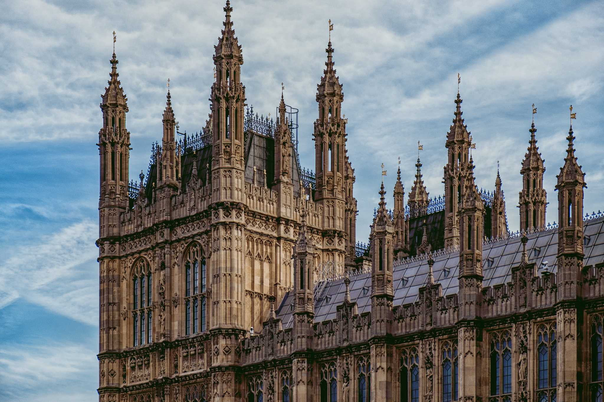

Романский стиль
Романский стиль (от лат. romanus — римский) — художественный стиль, господствовавший в Западной
Европе (а также затронувший некоторые страны Восточной Европы) с сер. X века по XII век (в ряде мест
— и в XIII веке), один из важнейших этапов развития средневекового европейского искусства.
Термин «романский стиль» появился только около 1820 года, когда была установлена связь архитектуры
XI—XII веков с древнеримской архитектурой (в частности, использование полуциркульных арок, сводов).
В целом, термин условен и отражает лишь одну, не главную, сторону искусства. Однако он вошёл во
всеобщее употребление.
Основной вид искусства романского стиля — архитектура, преимущественно церковная (каменный храм,
монастырские комплексы). Самые ранние дошедшие до нашего времени сооружения из камня были построены
в X веке. Хотя на протяжении 300 лет архитектурные формы развивались и становились сложнее и богаче,
однако они сохраняли сходство с прототипом, поэтому весь период объединен понятием — романское
искусство.
Романский период на территории Европы приходится на время господства феодального строя, основой
которого было сельское хозяйство. Первоначально все земли принадлежали королю, он распределял их
между своими вассалами, а те, в свою очередь, раздавали её для обработки крестьянам.
Архитектурные сооружения романского периода представляют собой массивные геометрические объёмы,
поверхности стен прорезаны маленькими окнами, орнамент используется редко. Основными постройками в
этот период становятся храм-крепость и замок-крепость. Главным элементом композиции монастыря или
замка становится башня — донжон. Вокруг неё располагались остальные постройки, составленные из
простых геометрических форм — кубов, призм, цилиндров.
Для романских построек характерно сочетание ясного архитектурного силуэта и лаконичности наружной
отделки — здание всегда гармонично вписывалось в окружающую природу, и поэтому выглядело особенно
прочным и основательным. Этому способствовали массивные стены с узкими проёмами окон и
ступенчато-углублёнными порталами.
Особенности архитектуры романского собора:
- В основе плана — раннехристианская базилика, то есть, продольная организация пространства
- Увеличение хора или восточной алтарной части храма
- Увеличение высоты храма
- Замена кессонного (кассетного) потолка каменными сводами. Своды были 2 видов: коробовые и крестовые
- Тяжелые своды потребовали мощные стены и колонны
- Основной мотив интерьера — полуциркульные арки
- Тяжесть романского собора «угнетает» пространство
- Рациональная простота конструкции, сложенной из отдельных квадратных ячеек — травей.
Готика
Название «готика» предложено в XV веке итальянскими теоретиками искусства, выразившими таким образом
своё отношение к казавшейся им варварской архитектуре Западной и Средней Европы.
Характерная особенность готического стиля — стрельчатый свод, состоящий из двух пересекающихся друг
с другом сегментных дуг. В результате своей вариабельности стрельчатый свод по многим позициям
конструктивно превосходил полуциркульный свод. Массивная каменная кладка свода в раннем
средневековье сменилась ажурными каменными конструкциями, чьи подчеркнуто вертикальные опоры и
колонны переносят собранные в пучок статические нагрузки на фундаменты.
Конструктивной особенностью готических зданий является приём передачи нагрузок от стен через
аркбутаны на контрфорсы.
Средневековое население деревень и городов было глубоко религиозным, поэтому основное предпочтение
отдавалось строительству культовых зданий. В то время, как орден цистерианцев поддерживал традицию
строительства монастырей в деревнях (например, в Корине, Доберане и Одентале близ Кельна), в
городском строительстве соперничали епископы, горожане и так называемые нищенствующие ордены. Число
башен в монастырях уменьшилось, правила ордена вообще запрещали монастырям строить башни, однако
высота и размеры нефов соборов превосходили все известные сооружения романского периода.
Готический стиль, в основном, проявился в архитектуре храмов, соборов, церквей, монастырей.
Развивался на основе романской, точнее говоря — бургундской архитектуры. В отличие от романского
стиля, с его круглыми арками, массивными стенами и маленькими окнами, для готики характерны арки с
заострённым верхом, узкие и высокие башни и колонны, богато украшенный фасад с резными деталями
(вимперги, тимпаны, архивольты) и многоцветные витражные стрельчатые окна. Все элементы стиля
подчёркивают вертикаль.
До начала XIV века преобладала форма базилики. Со временем, особенно в городах, наиболее
распространённой стала зальная форма, равновеликие нефы которой сливались внутри в единое
пространство. Наряду с церковными мистериями в огромных культовых помещениях проводились и народные
празднества, городские собрания, театральные представления, в них велась торговля.
Развитие городов привело к возникновению новых типов сооружений. На рыночной площади появились
здания ратуши, цехов и гильдий, требовались здания для торговли мясом и мануфактурой, склады и
торговые дома. Возводились арсеналы, строительные дворы, школы и больницы. Но прежде всего горожане
защищали себя и своё имущество от конкурирующих соседей и нападений феодалов, строя вокруг города
стены и башни. Немецкий рыцарский орден строил мощные крепости для утверждения своего господства над
населением завоеванных областей Северной и Восточной Европы.
В готической архитектуре выделяют 3 этапа развития: ранний, зрелый (высокая готика) и поздний
(пламенеющая готика).

Возрождение
Возрождение, или Ренессанс, — эпоха в истории культуры Европы, продлившаяся с начала XV до начала
XVII века.
Отличительная черта эпохи Возрождения — светский характер культуры, её гуманизм и антропоцентризм
(то есть интерес, в первую очередь, к человеку и его деятельности). Расцветает интерес к античной
культуре, происходит её «возрождение».
В архитектуре Возрождения особенное значение придаётся формам античной архитектуры: симметрии,
пропорции, геометрии и порядку составных частей[45], о чём наглядно свидетельствуют уцелевшие
образцы римской архитектуры. Сложная композиция зданий раннего средневековья сменяется упорядоченным
расположением колонн, пилястр и притолок, на смену несимметричным очертаниям приходит полукруг арки,
полусфера купола, ниши, эдикулы.
В эпоху Возрождения зодчий получает право авторства на свои произведения.
Первым представителем данного стиля можно назвать Филиппо Брунеллески, работавшего во Флоренции.
Затем оно распространилось в другие итальянские города, во Францию, Германию, Англию, Россию и
другие страны.
Архитекторы эпохи Возрождения заимствовали внешние черты римской архитектуры. Но технические
возможности и потребности общества изменились с античных времён. Римляне не строили частных домов,
подобных храмам. Напротив, в эпоху Возрождения в Италии стали распространёнными частные дома
палаццо, украшенные элементами ордера. В Древнем Риме возводились огромные стадионы и общественные
бани, а Возрождение не испытывало потребности в таких объектах. Античные нормы изучались и
воссоздавались для того, чтобы служить современным целям.
План зданий эпохи Возрождения определён прямоугольными формами, симметрией и пропорциями,
основанными на модуле. В храмах модулем часто является ширина пролёта нефа. Проблему целостного
единства конструкции и фасада впервые осознал Брунеллески, хотя он и не разрешил проблему ни в одной
из своих работ. Впервые этот принцип проявляется в здании Леона Баттисты Альберти — Базилике ди Сант
Андреа в Мантуе. Совершенствование проекта светского здания в стиле Возрождения началось в XVI веке
и высшей точки достигло в творчестве Палладио.
Фасад симметричен относительно вертикальной оси. Церковные фасады, как правило, размерены
пилястрами, арками и антаблементом, увенчаны фронтоном. Расположение колонн и окон передаёт
стремление к центру.
Жилые здания часто имеют карниз, на каждом этаже расположение окон и сопутствующих деталей
повторяется, главная дверь отмечена некоторой чертой — балконом или окружена рустом. Одним из
прототипов такой организации фасада был дворец Ручеллаи во Флоренции (1446—1451) с тремя поэтажными
рядами пилястр.
Барокко
Архитектура барокко — период в развитии архитектуры стран Европы и Америки (особенно в Центральной и
Южной), охвативший примерно 150—200 лет. Период начался в конце XVI века и завершился в конце XVIII
века.
В XVII веке происходило развитие буржуазных отношений и перерастание их в капиталистические
производственные отношения. Несмотря на то что европейская архитектура XVII—XVIII веков не
представляется единообразной, будучи динамичной в Италии, серьёзной во Франции, она объединена общим
понятием «барокко». Это слово взято из итальянского языка и означает «причудливый».
Архитектурные формы барокко основаны на искусстве Возрождения, однако превзошли его по сложности,
многообразию и живописности. Сильно раскрепованные фасады с профилированными карнизами, с
колоссальными на несколько этажей колоннами, полуколоннами и пилястрами, роскошными скульптурными
деталями, часто колеблющимися от выпуклого к вогнутому, придают самому сооружению движение и ритм.
Ни одна деталь не является самостоятельной, как это было в период Ренессанса. Все подчинено общему
архитектурному замыслу, к которому относятся оформление и украшение интерьеров, а также
садово-парковой и городской архитектурной среды.
Княжеские замки и культовые здания были первоочередными объектами строительства, города-резиденции и
монастыри — необходимыми дополнениями. Значительных общественных зданий зарождающийся класс
буржуазии ещё не строил.